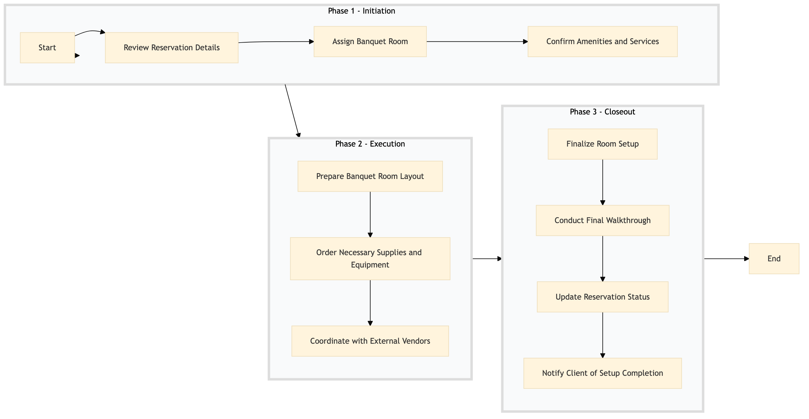

| Role | Steps |
|---|---|
| Front Desk Agent | 1.1 3.3 |
| Revenue Manager | 1.2 |
| Banquet Manager | 1.3 2.3 3.2 3.4 |
| Executive Housekeeper | 1.4 3.1 |
| Procurement Manager | 2.2 |
| Step | Name | Role | System | Input | Output | KPI | Dec? | Exc? | Pain Point / Risk |
|---|---|---|---|---|---|---|---|---|---|
| 1.1 | Review Reservation Details | Front Desk Agent | Oracle OPERA Cloud | Confirmed reservation details | Reservation summary report | Less than 5 minutes | N | Y | Incorrect or missing information in the reservation |
| 1.2 | Assign Banquet Room | Revenue Manager | Oracle OPERA Cloud | Reservation summary report | Room assignment confirmation | Less than 3 minutes | N | Y | Availability conflicts with other bookings |
| 1.3 | Confirm Amenities and Services | Banquet Manager | Oracle OPERA Cloud | Room assignment confirmation | Amenity list with quantities | Less than 4 minutes | N | Y | Mismatch between requested and available amenities |
| 2.1 | Prepare Banquet Room Layout | Executive Housekeeper | Oracle OPERA Cloud | Amenity list with quantities | Room layout plan | Less than 10 minutes | N | Y | Physical constraints of the room affecting layout |
| 2.2 | Order Necessary Supplies and Equipment | Procurement Manager | Birchstreet Procurement | Room layout plan | Purchase order confirmation | Less than 15 minutes | N | Y | Supply chain delays or stockouts |
| 2.3 | Coordinate with External Vendors | Banquet Manager | Oracle OPERA Cloud, Assa Abloy VingCard | Purchase order confirmation | Vendor coordination report | Less than 20 minutes | N | Y | Communication breakdowns with vendors |
| 3.1 | Finalize Room Setup | Executive Housekeeper | Oracle OPERA Cloud | Vendor coordination report | Setup completion checklist | Less than 25 minutes | N | Y | Technical issues with equipment |
| 3.2 | Conduct Final Walkthrough | Banquet Manager | Oracle OPERA Cloud | Setup completion checklist | Walkthrough report | Less than 10 minutes | N | Y | Client's dissatisfaction with setup |
| 3.3 | Update Reservation Status | Front Desk Agent | Oracle OPERA Cloud | Walkthrough report | Updated reservation status | Less than 5 minutes | N | Y | System errors or connectivity issues |
| 3.4 | Notify Client of Setup Completion | Banquet Manager | Oracle OPERA Cloud, Marriott Bonvoy CRM | Updated reservation status | Client notification | Less than 3 minutes | N | Y | Client's unavailability for confirmation |
This process outlines the steps involved in setting up and laying out banquet rooms at a full-service Marriott hotel using Oracle OPERA Cloud PMS.